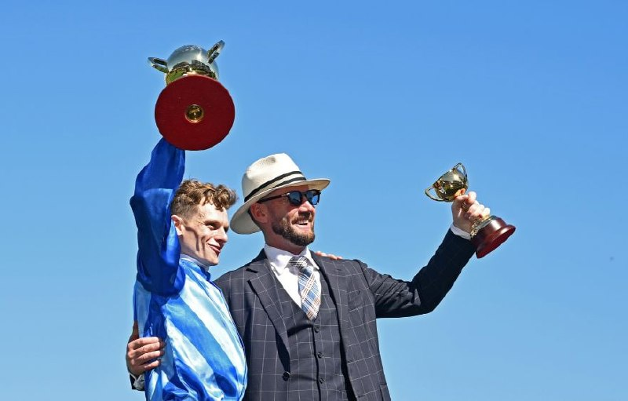

Robbie Williams paraliza Flemington en la previa de la Melbourne Cup
El cantante británico ofreció doce minutos de espectáculo en el Mounting Yard antes de la llegada del trofeo, en una jornada en la que la moda y los invitados del Birdcage compartieron protagonismo.

Cesión editorial (Telegram)
Flemington se detuvo antes de la carrera. Robbie Williams ocupó el Mounting Yard con un espectáculo de doce minutos que precedió a la llegada del Lexus Melbourne Cup Trophy. Fue la mayor producción de entretenimiento montada nunca en ese espacio del hipódromo.
El repertorio recorrió algunos de sus mayores éxitos: Feel, Rock DJ, Angels y Let Me Entertain You. Le acompañaron un nutrido elenco de bailarines y un despliegue de pirotecnia que dejó a los asistentes sin margen para mirar a otra parte.
En el Birdcage Enclosure se dieron cita nombres del espectáculo, el deporte y los negocios. El actor Jamie Foxx, ganador de un Óscar, acaparó las miradas a su llegada a la hacienda mexicana de Don Julio. LANDMARK by Lexus recibió a la honorable Julie Bishop. Crown acogió a Chris y Bec Judd, habituales del recinto, mientras que G.H. Mumm contó con Jules Neale, encargada del momento 'Tap Tap' de la jornada.
TAB apostó por el deporte y reunió a Hugh McCluggage y Conor McKenna junto a tres copas de campeón de la premiership. En otra de las carpas estuvieron los rostros televisivos Darren Palmer y Jules Robinson.
En el Front Lawn, el Melbourne Cup Carnival Fashions on the Field presented by Lexus cumplió con su cita habitual del Cup Day. La carpa, muy codiciada, se llenó de color durante otra jornada de finales muy disputadas.
El premio principal fue el Lillian Frank AM MBE Millinery Award, que reconoce el estilo y el dominio del diseño en la sombrerería. El jurado volvió a reunir a figuras destacadas, entre ellas una hija de Lillian Frank, el director creativo del Australian Fashion Festival, Damien Woolnough, y la sombrerera premiada Felicity Northeast.
La ganadora fue Souri Sengdara, vecina de Doncaster. Partió de su obsesión por el tejido para crear 'Dreamweaver', una pieza que empezó a gestarse en febrero y cuya confección le llevó más de tres meses.
Por Lucía Valdeolmos